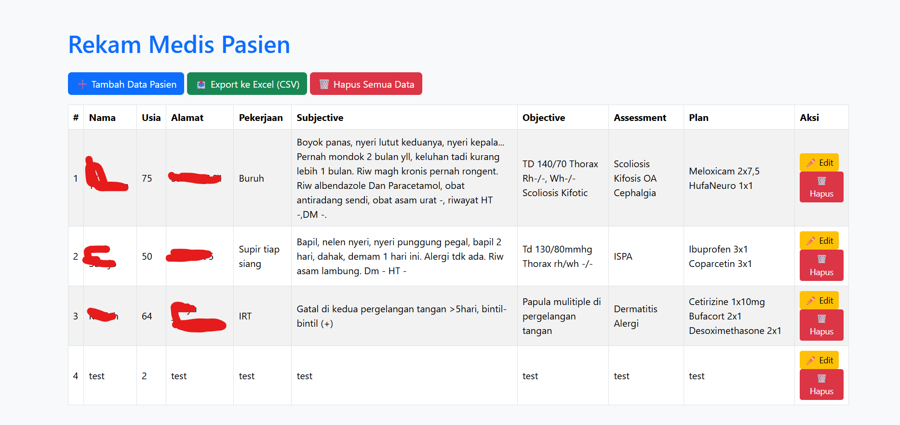
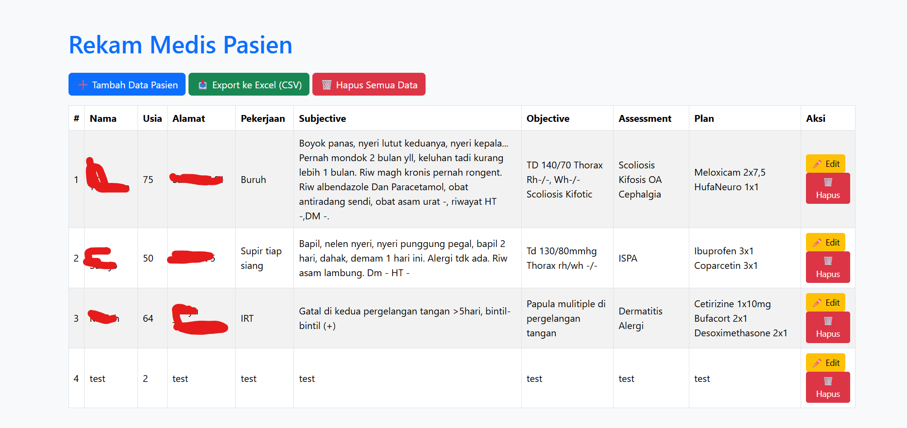

Machine Learning
Saya membangun model machine learning untuk klasifikasi obesitas. Saya juga melakukan feature engineering untuk meningkatkan akurasi model dan membuat model lebih ringan. Dengan model ini harapannya dapat membantu dalam mendiagnosis obesitas dengan lebih cepat dan akurat. Obesitas telah menjadi masalah kesehatan masyarakat global yang serius, memicu berbagai penyakit kronis seperti diabetes, penyakit jantung, dan hipertensi. Penentuan status obesitas seringkali hanya mengandalkan perhitungan manual Indeks Massa Tubuh (IMT / BMI) sederhana, yang kurang mampu memberikan prediksi risiko mendalam atau mengidentifikasi faktor-faktor pendukung lainnya. Untuk mengatasi tantangan tersebut, saya mengembangkan Aplikasi Prediksi Obesitas menggunakan pendekatan Machine Learning. Proyek ini bertujuan untuk menyediakan alat prediksi yang lebih akurat dan informatif dibandingkan metode tradisional.Dengan menggabungkan data biomedis tradisional dengan data kebiasaan gaya hidup dan menganalisisnya melalui model Machine Learning, aplikasi ini berfungsi sebagai pendamping kesehatan digital yang dapat membantu pengguna memprediksi risiko obesitas mereka dengan lebih cepat, lebih akurat, dan mendorong intervensi kesehatan yang proaktif.


Web Dev
Sebagai seorang developer yang memiliki ketertarikan pada efisiensi dan inovasi, saya melihat adanya kesenjangan signifikan dalam pengelolaan data di sektor kesehatan, terutama pada fasilitas layanan tingkat pertama. Di era digital ini, banyak klinik dan rumah sakit kecil masih bergantung pada pencatatan rekam medis berbasis kertas.Dokter dan staf harus menghabiskan waktu berharga hanya untuk mencari, menyalin, dan mengarsipkan dokumen. Data riwayat pasien rentan hilang, salah tempat, atau sulit diakses kembali, yang pada akhirnya dapat memengaruhi kualitas diagnosis dan perawatan yang diberikan.Proyek ini bertujuan untuk menyediakan platform terpusat yang memungkinkan staf medis mengelola daftar pasien, mencatat riwayat SOAP (Subjective, Objective, Assessment, Plan), dan meresepkan obat secara digital.Dengan fitur export data ke Excel, sistem ini tidak hanya mempermudah pencatatan, tetapi juga membuka potensi untuk analisis data kesehatan yang lebih baik. Singkatnya, proyek ini adalah permintaan dari saudara saya guna meningkatkan efisiensi operasional dan meminimalkan potensi kesalahan dalam pelayanan kesehatan, membuat proses pengobatan menjadi lebih terstruktur dan fokus pada pasien.
 
